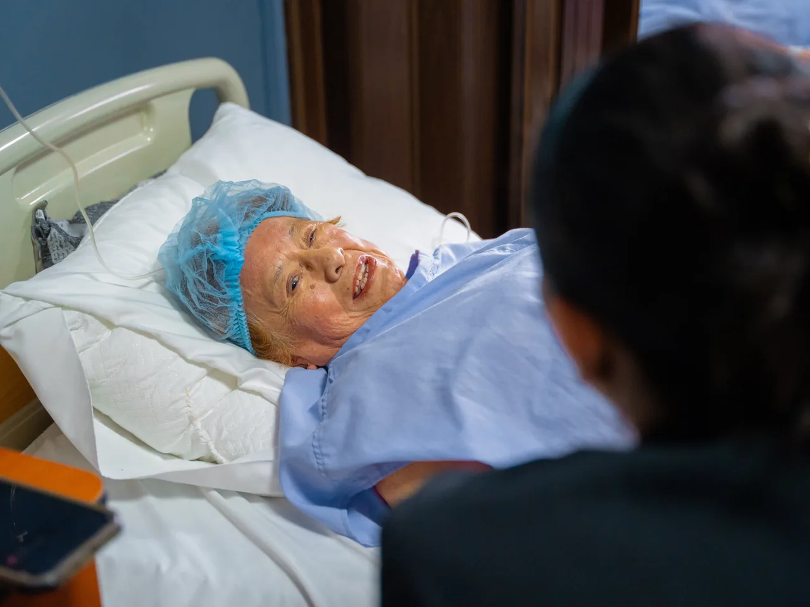
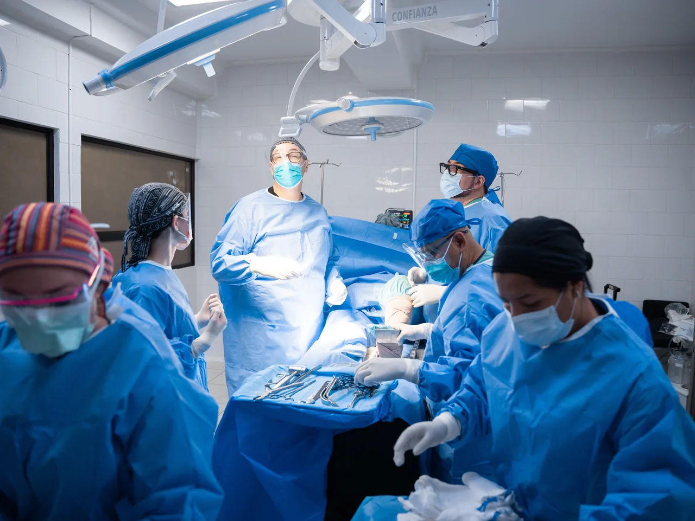
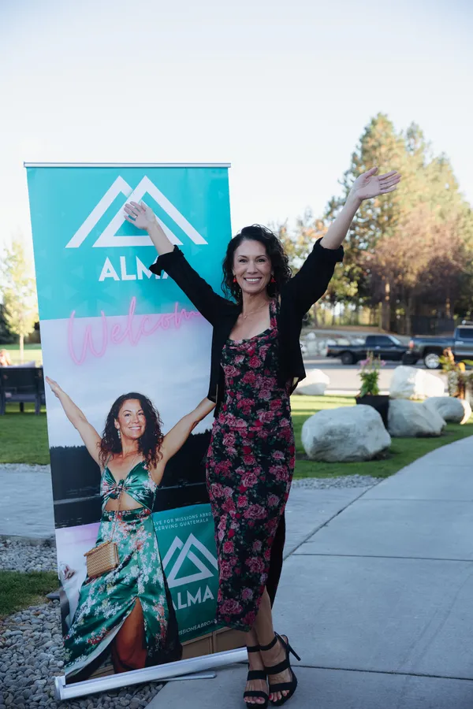
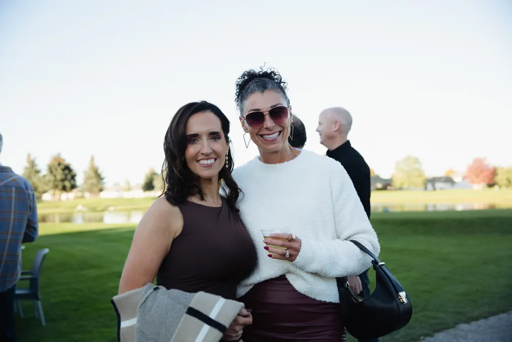

ALMA · Surgery receiptNo. 001
Cataract surgery
Sololá, monthly with Dr. Vicky Loza
- Hospital cost, one surgery
- $350
- Anesthesia: donated by a Guatemalan or US volunteer anesthesia provider
- $0
- Total: the real hospital cost of one surgery
- $350
Giving Tuesday Giving Tuesday ends 11:59 PM MST (America/Denver) on Dec 1, 2026 Year-end giving Help fund ALMA's 2027 surgery missions in Guatemala. Support surgery in Guatemala Your gift goes almost entirely to direct care.
Donate on Givebutter (opens in a new tab)Give
See the real hospital cost of one surgery, then sponsor it in one tap.
Sponsor a surgery
Pick a surgery, see what it really costs the hospital, and sponsor it in one tap.
Every $350 is the real hospital cost of one cataract surgery.
Donors have given enough to cover the real hospital cost of 0 cataract surgeries, or 0 knee arthroscopies, or 0 hip replacements.
The bell rings each time gifts cover one more cataract surgery ($350).
ALMA · Surgery receiptNo. 001
Sololá, monthly with Dr. Vicky Loza

ALMA · Surgery receiptNo. 002
Centro Médico Renacer, Guatemala City
A modern private hospital with Guatemalan surgeons.
Sponsor this knee — $550Rounded up to help cover supplies and logistics.
Have a donor-advised fund? Give from it in 2 minutes
ALMA · Surgery receiptNo. 003
Centro Médico Renacer, Guatemala City
A modern private hospital with Guatemalan surgeons.
This October the team completed 34 knee and hip replacements.
Sponsor this hip — $750Rounded up to help cover supplies and logistics.
Have a donor-advised fund? Give from it in 2 minutesEvery gift helps
Gifts are processed securely on Givebutter and are tax-deductible. A Love For Missions Abroad Inc. is a 501(c)(3) nonprofit, EIN 83-2378971. Care continues in 2027, with missions in April, June and October.
Donor-advised funds, checks and IRAs
Already set aside money for charity? Recommend a grant to ALMA in about two minutes.
Some DAF providers have a minimum grant amount.
Please let us know your name in the grant note so we can thank you.
Also for IRA Qualified Charitable Distributions and DAF checks.
Make checks payable to:
A Love For Missions Abroad Inc.
Mail to:
A Love For Missions Abroad Inc.
3272 North Alta Court
Coeur d'Alene, ID 83815
Memo (optional): "Surgical missions" plus your email so we can send a receipt.
If you are 70½ or older, you may be able to make a Qualified Charitable Distribution (QCD) by asking your IRA custodian to send a gift directly to ALMA.
Payable to: A Love For Missions Abroad Inc. · EIN: 83-2378971 · Mail to: 3272 North Alta Court, Coeur d'Alene, ID 83815
A QCD must go directly from the IRA trustee to the charity. For 2026, the IRS exclusion limit is $111,000 per eligible individual (IRS Notice 2025-67). A QCD can count toward a required minimum distribution. You generally cannot also deduct the excluded amount as a charitable contribution. Please consult your tax advisor or IRA custodian. ALMA cannot give tax advice.
ALMA is a 501(c)(3). EIN 83-2378971. Consult your tax advisor about your situation.
Where your gift goes
Prefer to give to a program? Each card opens that program's own Givebutter page.
Give toward volunteers' mission fees, the tax-deductible gifts that make each mission week possible.
GiveUnderwrite surgeries, supplies and operating room time for a full mission week.
GiveHelp a nurse, tech or interpreter cover their mission fee so they can serve.
GiveRestore a patient's sight. After surgery, our social worker sends you a report and a photo.
GiveDental exams and care for children in communities where a dentist is hard to reach.
GiveTraining that strengthens Guatemalan doctors, nurses and staff.
GiveKeeps local coordinators, logistics and year-round follow-up care running.
GiveSchool supplies and a playground for the children of Escuela Vuelta Grande.
GiveThe journey of one gift

The waitIn the highlands, many families are told to wait. Clinics often don't have the surgeons, medicine or instruments to help.
 The team
The team Your gift helps nurses, anesthesia providers and surgeons join Guatemalan teams on each mission, and sponsors volunteers who couldn't otherwise afford to come.

The operating roomAmerican and Guatemalan surgeons operate together at Centro Médico Renacer, using supplies and medication your gift provides.
 The recovery
The recovery Recovery nurses and Guatemalan staff check on every patient, and local follow-up care continues after the team flies home.
 The return home
The return home A grandmother who can walk without pain. A father who can work again. A child who can use their hands. That's what your gift does.
Dance for Guatemala
Our 2026 fundraiser blew past its $25,000 goal. Thank you, Coeur d'Alene. Watch for the next event.

